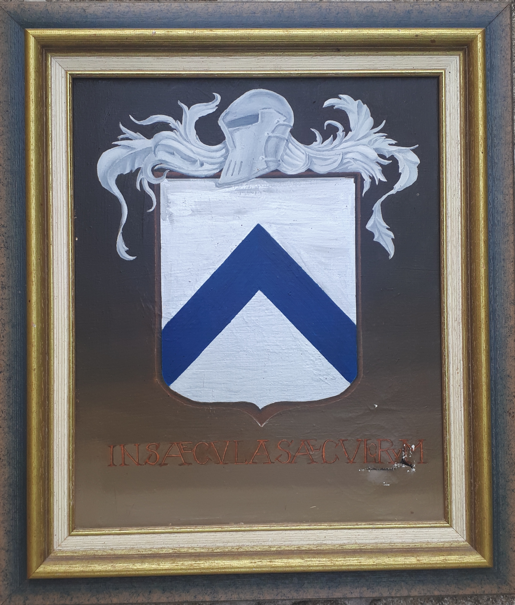
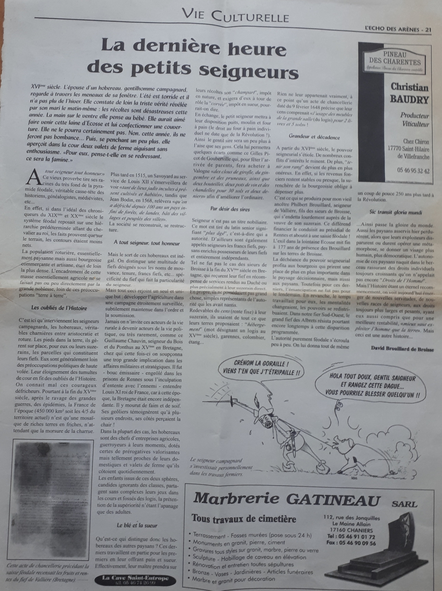
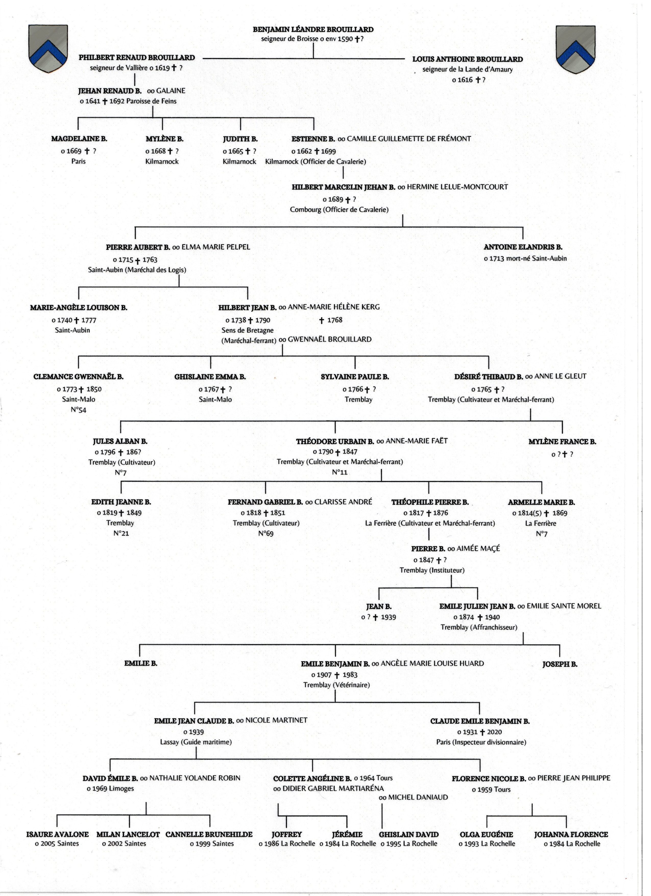

Nom et acquisition du statut
L’origine du nom Brouillard n’est pas liée à la météorologie mais dérive d’un mot gaulois, broglie, désignant un bois clos ou un domaine enclavé. De cette racine sont issus plusieurs noms de familles françaises, dont la maison de Broglie, les Brouillard et autre dérivés tels que Breuil.
La première mention archivée des Brouillard de Broisse figure dans un procès-verbal de 1648 pour le présidial de Rennes : Benjamin Léandre Brouillard. Il s'agit du premier seigneur de Broisse qu'on identifie nommément, mais vraisemblablement pas du premier de la lignée. Né probablement vers 1520, soit 32 ans après la bataille qui opposa les troupes du duc de Bretagne, François II, à celles du roi de France, Charles VIII, soutenues par la Ligue de Bretagne. La défaite du duc marqua la fin de la résistance bretonne à l’autorité royale lors de l'ultime bataille de Saint-Aubin-du-Cormier en l'an 1488.
Le statut révélé du fief de Broisse dans le document de 1648 (soumis à un cens fixe et non dépendant des revenus seigneuriaux) le désigne comme issu d'une récompense. Les dons de fiefs (beneficium) résultaient généralement de bravoures particulières, au combat par exemple, ou d'importants services rendus (beaucoup plus rare). Les anoblissements et gratifications de fiefs par charge ou par fonction nécessitaient d'occuper au préalable de telles fonctions – chirurgien, notaire ou ecclésiastique – mais aucune trace de l'occupation de ces fonctions n'est documentée dans le cas des Brouillard de cette lignée bretonne, il faut donc exclure la prise de fonction de ces terres seigneuriales de part cette voie. Il est donc légitime de penser que ce fût la résultante d’un acte de bravoure au combat (on parlait alors de vertus d'armes) amenant au fameux beneficium. On le comprend facilement, une telle gratification ne peut être qu'antérieure à la défaite du duché, guerre pour laquelle naturellement aucun combattant défenseur de l'indépendance bretonne face à la couronne de France, n'aura été récompensé par Charles VIII, roi belligérant et vainqueur du conflit. Le fief de Broisse serait donc dans la famille des Brouillard de cette extraction depuis la fin du XVe siècle, au plus tard en 1488.
Réalité sociale et historique méconnue du XIIIe au XVIIe siècle, la frontière entre les nobliaux de campagne et les seigneurs roturiers était floue. En effet ces derniers constituaient une catégorie marginale, hors des grandes logiques féodales, mais exerçaient un pouvoir bien réel, administrant leurs terres et leurs gens autour de leurs hébergements (nom désignant les maisons fortes ou manoirs dans la Bretagne féodale). Leur autorité relative s'appuyait sur la légitimité du pouvoir qui leur avait été confié, symbolisé par leurs armes en l'occurence «d'argent au chevron d'azur» pour les Brouillard de Broisse[1], sans en posséder les pleins droits féodaux.
(collection privée)
De fait, ce statut intermédiaire était surtout un processus lent appelé "anoblissement par tierce foi" [2]. Les seigneurs administrateurs de leurs fiefs pouvaient conserver ce statut sur deux ou trois générations avant l'aboutissement du parcours d'anoblissement, ou être interrompus en cours, comme ce fut le cas pour la branche : « Philbert Renaud Brouillard, seigneur de Vallière de laditte terre de Broisse » cf.acte de Chancellerie.
Les seigneurs roturiers bénéficiaient néanmoins de certains privilèges seigneuriaux. Leur pouvoir n’était pas absolu, mais relatif : ils pouvaient exercer le droit banal, c’est-à-dire rendre justice sur leurs terres, juger les larcins, le braconnage ou des différends mineurs. Certains allaient jusqu’à édicter des règles locales, sous le contrôle de leur suzerain.
Même seigneur de son fief, le rapport de vassalité qui le liait à son suzerain était régi par des accords précis. « L'hommage et la foi » - serment solennel par lequel le nouveau seigneur d'un fief jurait fidélité et services à son suzerain - était le lien sacré qui constituait le socle de leur relation féodale de vassalité-suzeraineté. Puis venaient les services à proprement parler. Tout d'abord l'ost, c'est à dire l'obligation militaire pour le seigneur lui-même -une quarantaine de jours par an- et pour les hommes de ses terres en cas de guerre. Il est à noter que ce service d'ost pouvait être commué en argent, on appelait cette conversion : écuage. Bien entendu, le seigneur devait la gratuité du passage du suzerain sur ses terres. Puis, en fonction du type de fief, le paiement du cens était aussi une obligation contractuelle. Le fief de Broisse était concerné par cette obligation. Pour ce qui est des Sieurs de Vallière (tenure du fief de Broisse), ils devaient s’acquitter de la somme de 81 livres et 25 sols, versée à leur suzerain, le baron de Prédaillec.
Transcription de l’acte de chancellerie de 1648
Entre Dame Elisabeth de Verneuil, veufiée de Messire Henry Paul d'Enfroyde, Chevalier Baron de Prédaillec comme Messire Jean de Verneuil son père, demanderesse aux fins du bail affermé et soumis à cens du fief de Vallière, de la noble terre de Broisse de la baronnie de Prédaillec d'une part.
Et Messire Philbert Renaud Brouillard, seigneur de Vallière de laditte terre de Broisse, deffendeur audit bail d'autre.
Vu la transaction moult fois renouvelée entre Cyril Paul d'Enfroyde, Chevalier Baron de Prédaillec père dudit Henry Paul d'Enfroyde, Chevalier Baron de Prédaillec, mari de la demanderesse d'une part et Benjamin Léandre Brouillard, honorable seigneur de la terre de Broisse père dudit Philbert Renaud seigneur de Vallière deffendeur d'autre, signé Marchaud notaire royal par laquelle transaction lesdits Sieurs de Vallière de la terre de Broisse de la baronnie de Prédaillec s'obligent à payer auxdits Sieurs de Prédaillec la somme de 81 livres & 25 sols à la signature des baux pour le cens du fief : l'hébergement et sa tour ronde flanquée à 35 l. [livres], l'usage des meubles de la grande salle et des pentes à domestiques à 2 l. & 25 sols, le colombier, l'étan, les rabines et les bois sur 210 arpents dont 300 perches labourables à 44 livres.
Sommation faicte l'onzier décembre dernier au Comʳᵉ [commissaire] G [Général] du présent siège à la requête de laditte Dame demanderesse signifiée le vingt & huit 9embre [novembre] de faire diligence pour le bail de laditte terre de Vallière par Duffon huissier. Assignation donnée en conséquence à la requête dudit Comʳᵉ G tant à laditte Dame Elisabeth qu'audit deffendeur du bail, ensuivant par ledit Duffon requête de laditte Dame demanderesse signifiée le vingt & huit 9embre dernier.
Nous avons octroyé acte à laditte Dame demanderesse de la déclaration faicte par le Sieur de Vallière, qu'il recognoist lui estre redevable de la somme de 150 livres et en conséquence, ordonnons qu'il soyt minutieusement procédé au recensement des fruits et rentes du présent bail de laditte terre de Broisse, distinction faite préalablement des deux tiers d'icelle en faveur du Sieur Brouillard Louis Anthoine, Sr de la Lande d’Amaury, mouvance de la terre de Broisse de la baronnie de Prédaillec, aisné du deffendeur conformément aux précédents baux.
Faict par nous François Prin comʳᵉ du Roy lieutenant particulier au Présidial de Rennes. Vacquant ce neufième de février de l'an Mil Six Cent Quarante & huit. [Signature] Prin
Réalités terre-à-terre des petites féodalités
Dans la France rurale de la fin Moyen-âge-début Renaissance, les hobereaux et petits seigneurs campagnards sont ancrés dans le sol des fiefs dont ils ont la charge (voir l’Écho des Arènes printemps 2000). Grâce à l'acte de 1648 recensant les fruits et rentes du fief de Vallière, on connaît la surface que celui-ci couvrait soit environ : 210 arpents selon la mesure bretonne du XVIIe siècle. Ce fief de Vallière occupait un tiers seulement du domaine de Broisse, le fief de la Lande d'Amaury quant à lui occupait les deux tiers restants. Les revenus générés par les surfaces dont on connaît les mesures assuraient un certain train de vie. Toutefois, le travail ne manquait pas sur ces terres et le sol était une perpétuelle préoccupation pour les seigneurs comme pour les vilains.
Situation géopolitique du fief de Broisse jusqu'à la fin du XVe siècle
Situé sur les « marches », zone tampon entre le duché de Bretagne et le royaume de France, le fief de Broisse se trouvait dans une région exposée aux incursions ennemies. Dans ce contexte, les seigneurs des marches participaient à un dispositif défensif coordonné : chacun, selon l’étendue de ses ressources, devait fournir un contingent d’hommes armés.
Les grands seigneurs contrôlaient généralement des châteaux-forts ou des places stratégiques, véritables pivots de la défense. Les petits seigneurs, eux, assumaient des responsabilités plus locales : surveiller une route ou la traversée d'une forêt, protéger un passage à gué, participer aux patrouilles et se rassembler en cas d’alerte pour défendre la frontière.
La position avancée de ces seigneurs — premiers remparts face à l’ennemi français — leur conférait certaines prérogatives supplémentaires par rapport aux tenanciers de fiefs moins exposés, car plus reculés dans les terres. Tout cela s’inscrivait dans un système de mouvance et d’obligations militaires régulé par le suzerain. Les revenus fonciers déterminaient les capacités militaires, permettant d’acquérir armes, protections et autres équipements nécessaires pour répondre aux obligations d’ost.
Le post universitaire (issu de Moodle) de Didier Méhu explique parfaitement ce particularisme des petites seigneuries des marches de Bretagne, véritables essaims de forces légères, mobiles et furtives. Lire l'article
Déchéance du statut
Les Brouillard de cette lignée dirigèrent ce fief de l'est breton durant environ 160 ans. En effet, l’administration du fief de Broisse par cette branche s’interrompt brutalement en 1648 à la suite des arrérages (arriérés) qui conduisirent Élisabeth de Verneuil (Buzançais), veuve du baron de Prédaillec, à une injonction puis à un recours administratif entraînant un "recensement des fruits et rentes" du fief de Vallière puis à sa saisie féodale [3]. (C 6038 recours administratifs des fiefs et francs fiefs série H « Clergé régulier » ARCHIVI. HIC. MS. FINITUR)
Le fils de Philbert, Jehan Renaud, né sous Louis XIII, ne fut jamais appelé seigneur de Vallière sur aucun acte. Il avait 7 ans quand son père fut déchu de son fief, à l'âge de 29 ans seulement.
C'est en Écosse que la biographie de Philbert continue. Cette expatriation plus ou moins consentie est attestée par sa descendance. En effet, son fils Jehan Renaud y fera naître trois de ses quatre enfants : Estienne, Judith et Mylène, nés à Kilmarnock. Le retour en France se fera à cette génération puisque leur dernier enfant, Magdelaine, naquit à Paris. Jehan Renaud (vraisemblablement accompagné de son père Philbert le seigneur déchu) vécut donc en Écosse pendant 27 ans avant le retour en France.
Hypothèses
La biographie de Louis Anthoine Brouillard, seigneur de la lande d'Amaury et frère aîné de Philbert, est pour ainsi dire inconnue. Il ne fut pas inquiété dans la procédure de saisie féodale. Cette branche aînée s'est éteinte sans remous. Un examen rapide de la lignée globale jusqu'à notre époque moderne met en lumière la faible proportion d'enfants mâles, ce qui étaye l’hypothèse de l'extinction de cette lignée.
Nous ne connaissons pas la raison pour laquelle Philbert Renaud manqua à son devoir de paiement du cens auprès du baron de Prédaillec. En effet, les terres fertiles et productives de cette région bretonne situées dans le secteur de l'ancienne paroisse de Feins-Dingé (Ille-et-Vilaine), interdisent d'attribuer ce non paiement du cens au manque de ressources. La tentation de vivre en grand seigneur l'a peut-être amené à vivre au-dessus de ses véritables moyens seigneuriaux.
Généalogie agnatique
Généalogie considérée sous l'approche agnatique allant à l'essentiel, traversant les âges pour suivre ceux qui transmirent le nom patronymique : Brouillard, depuis des temps non déterminés pour lui adjoindre au passage du XVe, XVIe et XVIIe siècles le nom de terre : Broisse.
Contributions et sources
- B.M.S. et registres paroissiaux
- Archives départementales d’Ille-et-Vilaine, séries 1B, AB, AP, BB, LM, IS
- Archives "Auld alliance" ref : M.N. Baudouin-Matuszek
-
Kilmarnock
597/15 062
597/15 065
597/15 068 - Salt Lake City, Banque Internationale de Registres Généalogiques
- États généraux des fonds : op. cit., tome IV, pp. 145 – 221 (“Chartiers Arrérage Censier”)
- Annales de l’Ouest, pp. 5 – 49 in plano, cote L.437
- Dictionnaire de la bibliographie française, B. cote 721
- Registres appointements du tribunal de Rennes Ft. 8000 F° 78 – C6038 série H
- Registres paroissiaux 201 E. 1458
- "La vie rurale en Bretagne à la fin du moyen-âge:1365-1525-1530" – Thèse Hist. Michelle Lebois. Rennes II/1986
- “Recours administratifs des fiefs et francs fiefs” N 47 F°147 Gallica (in extenso)
- Registre des lieux et paroisses de Bretagne avant 1796 (C1259 carte F1)
- Minutes notariales de l’Ouest, Paris – Archives 1e, 3e, 5e, 11e, 13e, 17e
- La Chenays Desbois et Badier, 3e édition, 1864
- Photographie couleur Kodak – Gold 800 AS, format class – AG 20 × 30
- William Steeve Brouillard (Ottawa), professeur d'histoire et contributeur principal
- Didier Méhu (Laval, Canada), repost de Moodle